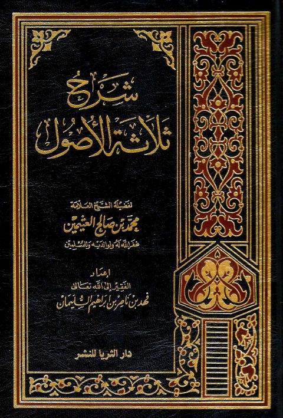

Downloads need an internet connection.
شرح ثلاثة الأصول- ط 3
Authors: محمد بن صالح العثيمين
Editors: فهد بن ناصر إبراهيم السلمان
Publishers: دار الثريا للنشر
**▫️ العنوان: شرح ثلاثة الأصول- ط 3** ▪️ المؤلف: #محمد_بن_صالح_العثيمين ▫️ المحقق: #فهد_ناصر_إبراهيم_السلمان ▪️ الناشر: #دار_الثريا_للنشر ▫️ تاريخ النشر: 1420هـ 2000 م ▪️ بلد النشر: الرياض، #السعودية ▫️ الطبعة: 1 ▪️ عدد الأجزاء: 1 ▫️ الصفحات: 168 ▪️ نوع الوعاء: #كتاب ▫️ التصنيف الرئيسي: #العقيدة_والمذاهب_والأديان ▪️ التصنيف الفرعي: #أصول_الدين ۪